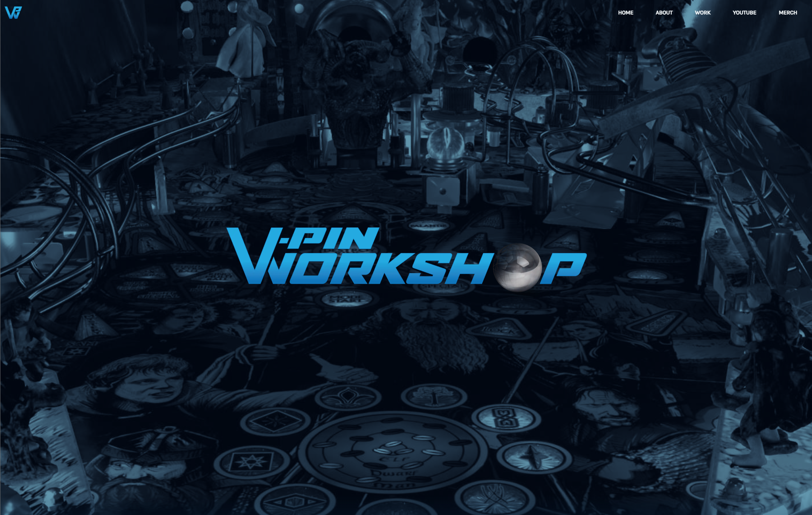
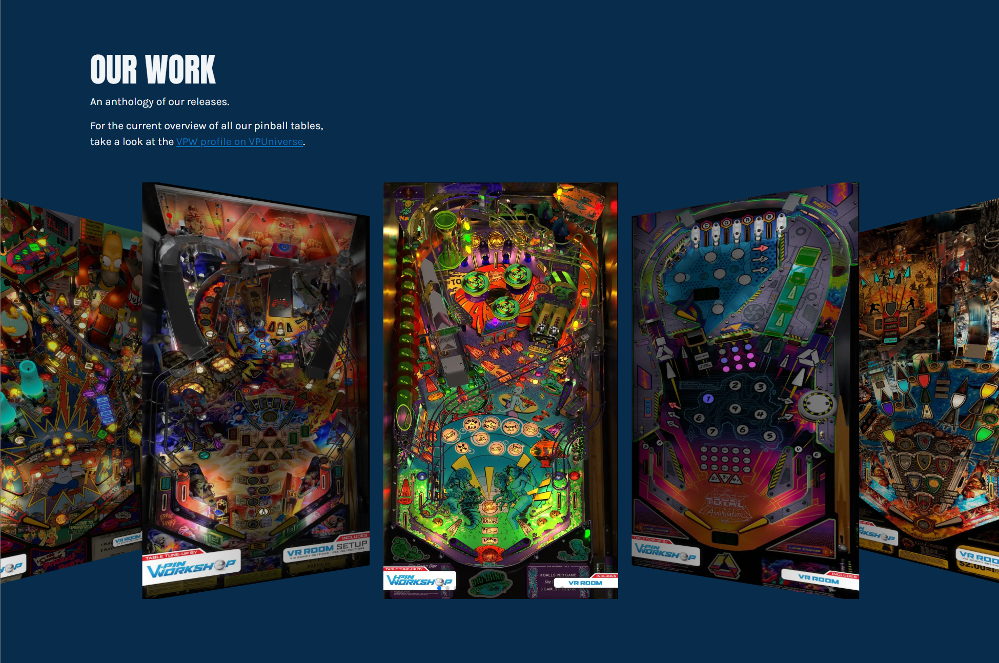
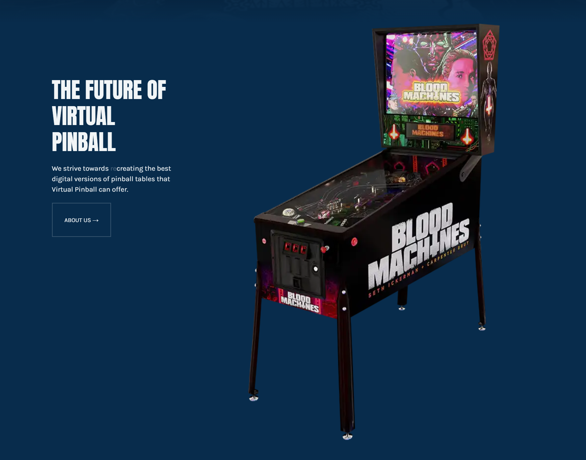

_V-Pin Workshop Website
2022
Virtual Pinball Workshop is a group of creators that make and upgrade digital recreations of pinball machines. Their work is considered the best in the world of Virtual Pinball.
I made their official website using Gatsby and gsap. I challenged myself to animate parts of the website synchronized with scrolling to make it stand out.
The website is hosted at vpinworkshop.com.


